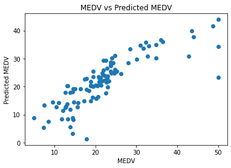

Inhalt
https://www.kaggle.com/misterkix/boston-house-price-analysis/notebook
Regression Metrics
Mean Absolute Error. Mean Squared Error. Root Mean Squared Error. Root Mean Squared Logarithmic Error. R Square. Adjusted R Square.
Alternative: https://www.kaggle.com/shreayan98c/boston-house-price-prediction
import pandas as pd
import numpy as np
import matplotlib.pyplot as plt
import seaborn as sns
names = ['CRIM', 'ZN','INDUS', 'CHAS', 'NOX', 'RM', 'AGE', 'DIS', 'RAD', 'TAX', 'PTRATIO', 'B', 'LSTAT', 'MEDV']
df = pd.read_csv('housing.csv', header=None, delimiter='\s+', names=names)
df.info()
---------------------------------------------------------------------------
FileNotFoundError Traceback (most recent call last)
~\AppData\Local\Temp\ipykernel_33252\3716389618.py in <module>
1 names = ['CRIM', 'ZN','INDUS', 'CHAS', 'NOX', 'RM', 'AGE', 'DIS', 'RAD', 'TAX', 'PTRATIO', 'B', 'LSTAT', 'MEDV']
----> 2 df = pd.read_csv('housing.csv', header=None, delimiter='\s+', names=names)
3
4 df.info()
c:\users\andre\appdata\local\programs\python\python37\lib\site-packages\pandas\util\_decorators.py in wrapper(*args, **kwargs)
309 stacklevel=stacklevel,
310 )
--> 311 return func(*args, **kwargs)
312
313 return wrapper
c:\users\andre\appdata\local\programs\python\python37\lib\site-packages\pandas\io\parsers\readers.py in read_csv(filepath_or_buffer, sep, delimiter, header, names, index_col, usecols, squeeze, prefix, mangle_dupe_cols, dtype, engine, converters, true_values, false_values, skipinitialspace, skiprows, skipfooter, nrows, na_values, keep_default_na, na_filter, verbose, skip_blank_lines, parse_dates, infer_datetime_format, keep_date_col, date_parser, dayfirst, cache_dates, iterator, chunksize, compression, thousands, decimal, lineterminator, quotechar, quoting, doublequote, escapechar, comment, encoding, encoding_errors, dialect, error_bad_lines, warn_bad_lines, on_bad_lines, delim_whitespace, low_memory, memory_map, float_precision, storage_options)
584 kwds.update(kwds_defaults)
585
--> 586 return _read(filepath_or_buffer, kwds)
587
588
c:\users\andre\appdata\local\programs\python\python37\lib\site-packages\pandas\io\parsers\readers.py in _read(filepath_or_buffer, kwds)
480
481 # Create the parser.
--> 482 parser = TextFileReader(filepath_or_buffer, **kwds)
483
484 if chunksize or iterator:
c:\users\andre\appdata\local\programs\python\python37\lib\site-packages\pandas\io\parsers\readers.py in __init__(self, f, engine, **kwds)
809 self.options["has_index_names"] = kwds["has_index_names"]
810
--> 811 self._engine = self._make_engine(self.engine)
812
813 def close(self):
c:\users\andre\appdata\local\programs\python\python37\lib\site-packages\pandas\io\parsers\readers.py in _make_engine(self, engine)
1038 )
1039 # error: Too many arguments for "ParserBase"
-> 1040 return mapping[engine](self.f, **self.options) # type: ignore[call-arg]
1041
1042 def _failover_to_python(self):
c:\users\andre\appdata\local\programs\python\python37\lib\site-packages\pandas\io\parsers\c_parser_wrapper.py in __init__(self, src, **kwds)
49
50 # open handles
---> 51 self._open_handles(src, kwds)
52 assert self.handles is not None
53
c:\users\andre\appdata\local\programs\python\python37\lib\site-packages\pandas\io\parsers\base_parser.py in _open_handles(self, src, kwds)
227 memory_map=kwds.get("memory_map", False),
228 storage_options=kwds.get("storage_options", None),
--> 229 errors=kwds.get("encoding_errors", "strict"),
230 )
231
c:\users\andre\appdata\local\programs\python\python37\lib\site-packages\pandas\io\common.py in get_handle(path_or_buf, mode, encoding, compression, memory_map, is_text, errors, storage_options)
705 encoding=ioargs.encoding,
706 errors=errors,
--> 707 newline="",
708 )
709 else:
FileNotFoundError: [Errno 2] No such file or directory: 'housing.csv'
# Importing the Boston Housing dataset
from sklearn.datasets import load_boston
boston = load_boston()
data = pd.DataFrame(boston.data)
data.columns = boston.feature_names
data.head()
#Adding target variable to dataframe
data['PRICE'] = boston.target
# Median value of owner-occupied homes in $1000s
data.shape
C:\Users\andre\anaconda3\lib\site-packages\sklearn\utils\deprecation.py:87: FutureWarning: Function load_boston is deprecated; `load_boston` is deprecated in 1.0 and will be removed in 1.2.
The Boston housing prices dataset has an ethical problem. You can refer to
the documentation of this function for further details.
The scikit-learn maintainers therefore strongly discourage the use of this
dataset unless the purpose of the code is to study and educate about
ethical issues in data science and machine learning.
In this special case, you can fetch the dataset from the original
source::
import pandas as pd
import numpy as np
data_url = "http://lib.stat.cmu.edu/datasets/boston"
raw_df = pd.read_csv(data_url, sep="\s+", skiprows=22, header=None)
data = np.hstack([raw_df.values[::2, :], raw_df.values[1::2, :2]])
target = raw_df.values[1::2, 2]
Alternative datasets include the California housing dataset (i.e.
:func:`~sklearn.datasets.fetch_california_housing`) and the Ames housing
dataset. You can load the datasets as follows::
from sklearn.datasets import fetch_california_housing
housing = fetch_california_housing()
for the California housing dataset and::
from sklearn.datasets import fetch_openml
housing = fetch_openml(name="house_prices", as_frame=True)
for the Ames housing dataset.
warnings.warn(msg, category=FutureWarning)
(506, 14)
df.head()
| CRIM | ZN | INDUS | CHAS | NOX | RM | AGE | DIS | RAD | TAX | PTRATIO | B | LSTAT | MEDV | |
|---|---|---|---|---|---|---|---|---|---|---|---|---|---|---|
| 0 | 0.00632 | 18.0 | 2.31 | 0 | 0.538 | 6.575 | 65.2 | 4.0900 | 1 | 296.0 | 15.3 | 396.90 | 4.98 | 24.0 |
| 1 | 0.02731 | 0.0 | 7.07 | 0 | 0.469 | 6.421 | 78.9 | 4.9671 | 2 | 242.0 | 17.8 | 396.90 | 9.14 | 21.6 |
| 2 | 0.02729 | 0.0 | 7.07 | 0 | 0.469 | 7.185 | 61.1 | 4.9671 | 2 | 242.0 | 17.8 | 392.83 | 4.03 | 34.7 |
| 3 | 0.03237 | 0.0 | 2.18 | 0 | 0.458 | 6.998 | 45.8 | 6.0622 | 3 | 222.0 | 18.7 | 394.63 | 2.94 | 33.4 |
| 4 | 0.06905 | 0.0 | 2.18 | 0 | 0.458 | 7.147 | 54.2 | 6.0622 | 3 | 222.0 | 18.7 | 396.90 | 5.33 | 36.2 |
print(df.isnull().sum())
CRIM 0
ZN 0
INDUS 0
CHAS 0
NOX 0
RM 0
AGE 0
DIS 0
RAD 0
TAX 0
PTRATIO 0
B 0
LSTAT 0
MEDV 0
dtype: int64
df.describe()
| CRIM | ZN | INDUS | CHAS | NOX | RM | AGE | DIS | RAD | TAX | PTRATIO | B | LSTAT | MEDV | |
|---|---|---|---|---|---|---|---|---|---|---|---|---|---|---|
| count | 506.000000 | 506.000000 | 506.000000 | 506.000000 | 506.000000 | 506.000000 | 506.000000 | 506.000000 | 506.000000 | 506.000000 | 506.000000 | 506.000000 | 506.000000 | 506.000000 |
| mean | 3.613524 | 11.363636 | 11.136779 | 0.069170 | 0.554695 | 6.284634 | 68.574901 | 3.795043 | 9.549407 | 408.237154 | 18.455534 | 356.674032 | 12.653063 | 22.532806 |
| std | 8.601545 | 23.322453 | 6.860353 | 0.253994 | 0.115878 | 0.702617 | 28.148861 | 2.105710 | 8.707259 | 168.537116 | 2.164946 | 91.294864 | 7.141062 | 9.197104 |
| min | 0.006320 | 0.000000 | 0.460000 | 0.000000 | 0.385000 | 3.561000 | 2.900000 | 1.129600 | 1.000000 | 187.000000 | 12.600000 | 0.320000 | 1.730000 | 5.000000 |
| 25% | 0.082045 | 0.000000 | 5.190000 | 0.000000 | 0.449000 | 5.885500 | 45.025000 | 2.100175 | 4.000000 | 279.000000 | 17.400000 | 375.377500 | 6.950000 | 17.025000 |
| 50% | 0.256510 | 0.000000 | 9.690000 | 0.000000 | 0.538000 | 6.208500 | 77.500000 | 3.207450 | 5.000000 | 330.000000 | 19.050000 | 391.440000 | 11.360000 | 21.200000 |
| 75% | 3.677083 | 12.500000 | 18.100000 | 0.000000 | 0.624000 | 6.623500 | 94.075000 | 5.188425 | 24.000000 | 666.000000 | 20.200000 | 396.225000 | 16.955000 | 25.000000 |
| max | 88.976200 | 100.000000 | 27.740000 | 1.000000 | 0.871000 | 8.780000 | 100.000000 | 12.126500 | 24.000000 | 711.000000 | 22.000000 | 396.900000 | 37.970000 | 50.000000 |
plt.figure(figsize=(20,15))
sns.heatmap(df.corr(), annot=True)
<AxesSubplot:>
X= df.drop(columns='MEDV')
Y= df.MEDV
from sklearn.model_selection import train_test_split
X_train, X_test, y_train, y_test = train_test_split(X,Y,test_size=0.2)
from sklearn.tree import DecisionTreeRegressor
from sklearn.metrics import r2_score
tree_reg = DecisionTreeRegressor()
tree_reg.fit(X_train, y_train)
y_pred_tree = tree_reg.predict(X_test)
r2_score(y_test, y_pred_tree)
0.8649164090315633
from sklearn.linear_model import LinearRegression
linreg = LinearRegression()
linreg.fit(X_train,y_train)
y_pred_linreg = linreg.predict(X_test)
r2_score(y_test, y_pred_linreg)
0.6909645871946426
from sklearn import metrics
print(metrics.mean_absolute_error(y_test, y_pred_linreg))
print(metrics.mean_squared_error(y_test, y_pred_linreg))
3.5244242796862255
27.008053365687115
from math import sqrt
print(sqrt(metrics.mean_squared_error(y_test, y_pred_linreg)))
print(metrics.r2_score(y_test, y_pred_linreg))
5.19692730040426
0.6909645871946426
plt.scatter(y_test, y_pred_linreg)
plt.xlabel("MEDV")
plt.ylabel("Predicted MEDV")
plt.title("MEDV vs Predicted MEDV")
plt.show()

from sklearn.tree import DecisionTreeRegressor
tree_reg = DecisionTreeRegressor()
tree_reg.fit(X_train, y_train)
y_pred_tree = tree_reg.predict(X_test)
r2_score(y_test, y_pred_tree)
0.8651733008519189